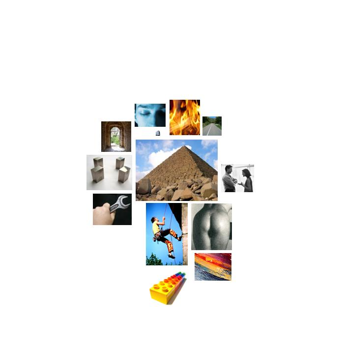

kerry.txt
  timelessness
timelessness endless, lifetime, forever, lifetime, forever, forever, forever, forever
 ascent
ascent wing, wing, rising, lifted, lifted, flight, hanging, flew, risen, lift, rising
 anality
anality polluters, pollution
 concreteness
concreteness here, here, at, where, where, where, open, open, west, toward, here, out, between, separating, east, west, east, sides, toward, off, at, over, out, across, at, here, at, middle, ahead, here, out, middle, where, where, here, middle, ahead, at, side, middle, away, back, long, forward, at, front, across, out, back, place, out, at, side, here, over, overstretched, overextended, backdoor, out, front, far, away, here, at, opening, closing, here, here, across, behind, at, out, off, where, among, narrow, narrow, at, overseas, away, along, out, out, here, where, where, back, where, where, middle, here, close, overseas, where, middle, straight, out, back, over, here, middle, east, ahead, place, region, region, side, side, at, off, at, places, where, backgrounds, out, where, out
 order
order simple, divided, balanced, listen, class, balanced, standard, class, class, uniform, class, simple, system, divide, class, class, standards, class, system, uniform, divide, divided, measure, system
 instrumental_behavior
instrumental_behavior make, making, found, finish, making, winning, winning, finished, record, reached, work, find, make, costs, working, working, jobs, jobs, jobs, jobs, pay, jobs, paid, jobs, risk, worked, make, worker, succeed, making, soldiers, risked, make, make, make, carrying, lessons, tried, lesson, win, burden, cost, risk, soldiers, job, use, build, win, reach, make, effort, win, belong, belongs, makes, belong, belong, belong, belongs, make, afford, collection, buy, work, worker, worker, job, factory, job, workers, working, works, find, jobs, pay, earned, jobs, work, pay, build, manufacturing, jobs, jobs, paying, jobs, belong, products, jobs, workers, job, trade, worker, worker, foundation, make, pay, burden, business, make, job, spend, affordable, afford, pick, make, prices, buy, build, make, find, claim, build, reached, find, cure, make, work, reach
 fire
fire fire, firefighters, smoke, fire, firepower, firehouses, solar, sun
 expressive_behavior
expressive_behavior carolina, carol, play, playing, playing
 brink-passage
brink-passage line, street, aisle, stairs, lines, path, ports, streets, doorstep, streets, accessible, road, horizon, step, horizon
 social_behavior
social_behavior thank, share, gift, help, answered, taught, taught, responsibilities, told, thank, thank, gift, service, called, service, promise, telling, ask, conduct, meetings, advice, election, told, told, say, say, answer, saying, accept, say, speaks, speaks, thank, shared, sharpton, say, thank, teaching, say, thank, answer, rescuers, call, meet, saying, saying, proclaiming, ask, guided, tell, telling, able, say, protect, message, asked, share, met, response, conduct, say, help, confidence, able, tell, follow, protection, message, offer, speak, say, call, elections, guided, talk, spoken, talk, protecting, election, social, election, service, tell, election, appeals, shared, appeals, shared, responsibility, met, met, say, help, met, help, help, help, help, ask, tell, met, calls, responsibility, follow, tell, say, education, education, teachers, treats, teachers, met, able, say, elected, dependence, told, education, say, said, acceptance, speech, address, election, say, said, say, told, promise, asked, asked, asked, asked, information, ask, aids, treat
 consciousness_alteration
consciousness_alteration imagined, mesmerized, dream, dream, sleeping, dream, dream
 voyage
voyage rode, journey, journey, journey, ships, shipped, shipping, exploring
 restraint
restraint must, guarding, guard, determined, blocks, policy, taxpayers, required, guard, determination, shutting, policies, must, tax, tax, determined, tax, tax, taxes, taxes, tax, tax, tax, determined, stop, prison, stop, controls, must, bind
thank, share, gift, help, answered, taught, taught, responsibilities, told, thank, thank, gift, service, called, service, promise, telling, ask, conduct, meetings, advice, election, told, told, say, say, answer, saying, accept, say, speaks, speaks, thank, shared, sharpton, say, thank, teaching, say, thank, answer, rescuers, call, meet, saying, saying, proclaiming, ask, guided, tell, telling, able, say, protect, message, asked, share, met, response, conduct, say, help, confidence, able, tell, follow, protection, message, offer, speak, say, call, elections, guided, talk, spoken, talk, protecting, election, social, election, service, tell, election, appeals, shared, appeals, shared, responsibility, met, met, say, help, met, help, help, help, help, ask, tell, met, calls, responsibility, follow, tell, say, education, education, teachers, treats, teachers, met, able, say, elected, dependence, told, education, say, said, acceptance, speech, address, election, say, said, say, told, promise, asked, asked, asked, asked, information, ask, aids, treat